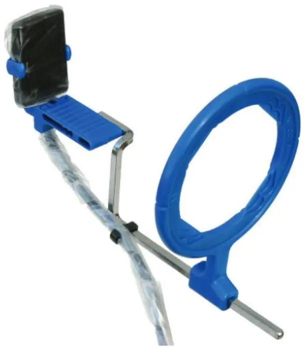
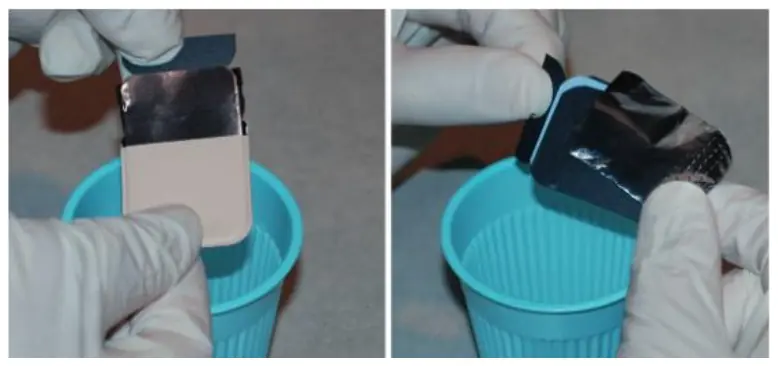

نسخه استخراجشده؛ ترجمه یا تأیید علمی انجام نشده است. وضعیت: captured
مسئلهی بنیادی سنسور دیجیتال: «سنسورهای تصویربرداری دیجیتال با حرارت قابل استریل کردن نیستند، پس مهم است که هنگام قرار دادن در دهان بیمار، از یک سد برای محافظتشان از آلودگی استفاده شود.»

و توصیهی سازندگان: «بهطور معمول، سازندگان این سنسورها کاربرد غلافهای سد پلاستیکی را توصیه میکنند که چند اینچ در طول کابل سنسور هم امتداد مییابند.»
و اکنون عددی که همهچیز را تغییر میدهد: «ولی چنین سدهایی تقریباً ۴۰ درصد مواقع شکست میخورند.»
و دو پاسخ به این شکست:
و یک هشدار دربارهی انتخاب ماده: «سازندهی چنین تجهیزاتی باید برای ضدعفونیکنندهی مناسب مشورت شود.» و یک استثنای فناورانه: «برخی سازندگان سنسورهای جامدی طراحی کردهاند که میتوانند در یک استریلانت سرد — یک ضدعفونیکنندهی سطح بالای ثبتشدهی EPA — غوطهور شوند.»
روش کاربردشان: «سنسورهای PSP در کیسههای پلاستیکی یکبارمصرف با درزبندی تاشده برای استفاده در دهان گذاشته میشوند.»
و مسئلهی خاصشان را دقیق بفهم: «چون کل کیسهی پلاستیکی با سنسور PSP وارد دهان میشود، این صفحهها ممکن است هنگام برداشته شدن از کیسههای پلاستیکی برای پردازش با بزاق آلوده شوند. این آلودگی میتواند به آلودگی متقاطع صفحههای دیگر و تجهیزات پردازش بینجامد.»
و راهحلش: «برای کمینه کردن این مشکل، صفحههای PSP باید میان بیماران، با روشی که سازنده توصیه میکند، ضدعفونی شوند.» و یک گزینهی افزوده: «صفحههای PSP میتوانند با اتیلن اکساید گازاستریل شوند.»
و تفاوت بنیادی دو گیرنده را کنار هم بگذار:
قاعدهی پیشگیری از آلودگی انبار: «برای پیشگیری از آلودگی موجودی انبوه فیلم، باید در مقادیر متناسب با روش توزیع شوند.» و روشش: «شمار لازم فیلم برای یک سری کامل یا سری بیندندانی باید در پاکتهای سکهای یا لیوان کاغذی در اتاق آمادهسازی مرکزی بستهبندی شود.»

و یک ممنوعیت صریح: «هیچکس با دستکش آلوده نباید فیلمی از این موجودی بردارد. فیلمها باید تنها توسط اعضای کارکنان با دست تمیز یا دستکش تمیز توزیع شوند.»
مزیتش: «پاکتهای فیلم ممکن است در یک پاکت پلاستیکی بستهبندی شوند که فیلم را از تماس با بزاق و خون حین پرتوگیری محافظت میکند. فیلم محافظتشده با سد در بیشتر ابزارهای نگهدارنده جا میشود.»
و ویژگی جذابش: «سهولتی که با آن باز میشوند و فیلم بیرون کشیده میشود.»
و روال دقیقش: «برای بهترین نتیجه، پاکت باید پس از پرتوگیری در دهان، در یک ضدعفونیکننده غوطهور شود. سپس پاکت باید خشک و باز شود و اجازه داده شود فیلم بیفتد. پاکتهای سد میتوانند بهراحتی در ناحیهی روشن باز شوند، فیلم روی سطح کار تمیز یا در لیوان کاغذی یا پلاستیکی تمیز انداخته شود، و فیلم به دیلایتلودر یا تاریکخانه منتقل گردد.»
مسئله: «پاکتهای کاغذی فیلم حین پرتوگیری در دهان بیمار در معرض بزاق و احتمالاً خون قرار میگیرند.»
و راهحل ساده: «برای پیشگیری از نفوذ بزاق به پاکت کاغذی، یک حولهی کاغذی کنار ظرف فیلمهای پرتوگیرشده باید گذاشته شود. شاغل باید از این حوله برای پاک کردن هر فیلم بهمحض خارج شدن از دهان و پیش از گذاشتن کنار فیلمهای دیگر استفاده کند.» و یک جایگزین: «این مشکل با استفاده از فیلم بستهبندیشده در وینیل هم قابل پرهیز است.»
و هدف صریح این بخش: «هدف در تاریکخانه، شکستن زنجیرهی عفونت است تا تنها فیلمهای تمیز درون محلولهای پردازش گذاشته شوند.»
و روال دو-حولهای: «پس از انجام همهی پرتوگیریها، اپراتور باید دستکشهایش را دربیاورد و ظرف فیلمهای آلوده را به تاریکخانه ببرد. دو حوله روی سطح کار تاریکخانه گذاشته میشوند»:
و روش باز کردن پاکت بدون لمس فیلم — چهار گام: «شاغل یک جفت دستکش تمیز میپوشد، پاکت فیلم را از انتهای رنگیکدشده برمیدارد، و زبانه را به بالا و دور از پاکت میکشد تا زبانهی کاغذ سیاه پیچیدهشده روی انتهای فیلم آشکار شود. با نگه داشتن فیلم روی یک لیوان، شاغل با احتیاط زبانهی کاغذ سیاه را میگیرد و فیلم را از پاکت بیرون میکشد. وقتی فیلم از پاکت بیرون کشیده میشود، از پوشش کاغذی درون لیوان میافتد. ممکن است لازم شود پوشش کاغذی بهآرامی تکان داده شود تا فیلم آزاد شود.»
و پایان روال: «پس از باز شدن همهی فیلمها، شاغل بستهبندی آلوده و ظرف را جمع میکند و همراه با دستکشهای آلوده دور میریزد. فیلمهای تمیز به روش معمول پردازش میشوند.»
و یک نکتهی راحتکننده: «هنگام دست زدن به فیلمهای پردازششده، مانتهای فیلم، یا پروندهی بیمار، پوشیدن دستکش لازم نیست.»
مسئله: «پردازشگرهای خودکار فیلم با دیلایتلودر مسئلهی ویژهای میسازند، بهدلیل خطر آلوده شدن آستینها با دستکش یا پاکت آلوده.»
و دو راهکار:
و یک روش جایگزین برای فیلم وینیلی: «فیلم پرتوگیرشده را، هنوز در پاکت پلاستیکی محافظ، هنگام خارج کردن از دهان و پس از پاک کردن با حولهی کاغذی، در یک محلول ضدعفونیکنندهی تأییدشده بگذار. باید پس از پرتوگیری آخرین فیلم، بهمدت توصیهشده در ضدعفونیکننده بماند.» و عددش: «غوطهوری ۳۰ ثانیهای در محلول ۵٫۲۵ درصد هیپوکلریت سدیم مؤثر است.»